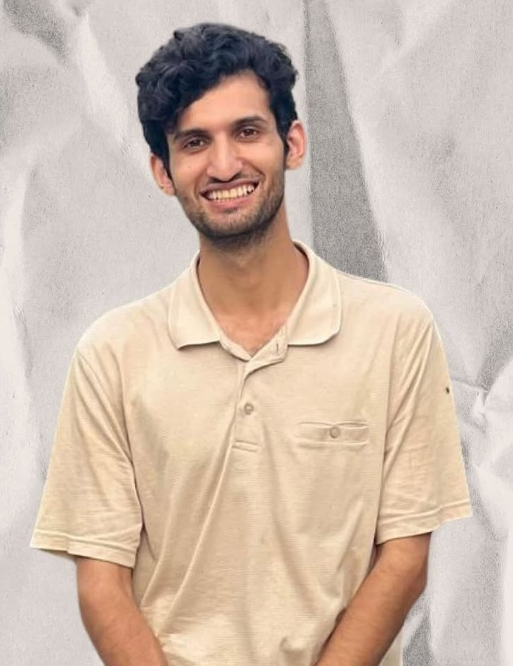

01 / ZH

FOUNDER 01
Zawar Hussain
Co-Founder
Zawar Hussain is a LUMS law student with interests spanning legal research, writing, public discourse, and questions at the intersection of law and society. His work across student-led academic and advocacy spaces reflects an interest in research, dialogue, and public engagement.
As a co-founder of Praxis, he is part of the effort to build a student-led research culture where questions can move from discussion to investigation and, ultimately, action.